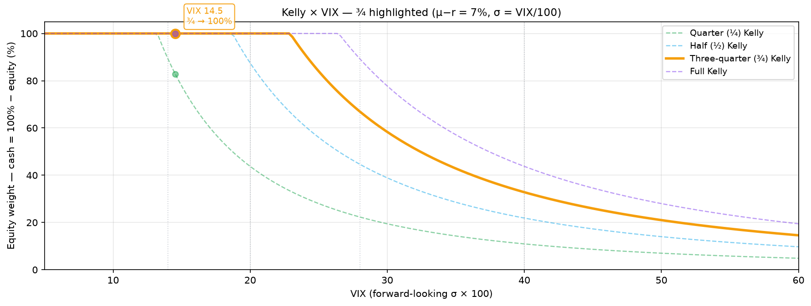
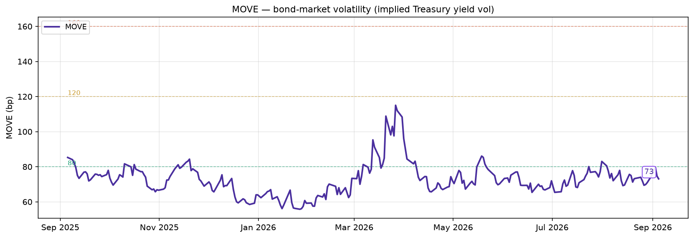
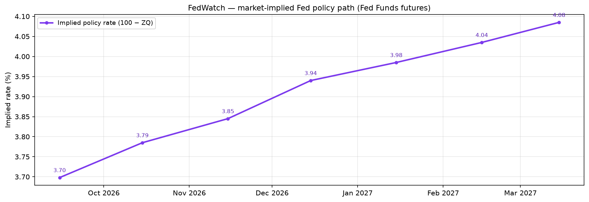

butterflow Investment Notes¶
Notes for the retail investor who treats volatility as fuel, not as enemy.
Math- and data-driven investment principles. In an age where AI dominates markets in milliseconds, some things don't change — the math of compounding, the structure of volatility, and time as a weapon.
📊 Daily Dashboard (Updated Sep 5, 3:37 AM ET)¶
Update schedule
- Cron: daily 03:10 UTC Tue–Sat (clean post-close EOD) + hourly during US market hours (14–21 UTC, Mon–Fri) for an intraday snapshot refresh — intraday mainly freshens the Yahoo-sourced numbers (MOVE, FedWatch); Cboe/FRED/CFTC tiles hold their last EOD/release value
- Refreshed: VIX TS · COR+SKEW · VolVol · Kelly × VIX · MOVE · COT · FedWatch · credit spreads charts + card numbers — all rebuilt in the same cycle
- Source: Cboe (VIX · COR/SKEW · VVIX) · Yahoo (MOVE · Fed Funds futures) · FRED (credit OAS · EFFR) · CFTC (COT)
- Native cadence: most tiles refresh daily (EOD) — but COT is weekly (Friday release, unchanged through the week) and credit spreads lag ~1 business day. The script rebuilds all of them daily, but those two only change on their own schedule
- Variance: GitHub Actions cron has ±30 min jitter. In the rare case Cboe publishes that day's close late and the cron snaps the previous day's row, the live chart catches up on the next business-day cycle and the slider archive back-fills missing days via the 14-day gap-fill pass each run — so no data is lost
💰 Main Bucket — Suggested Equity / Cash Mix¶
| Step | Value |
|---|---|
| ① Kelly × VIX base (VIX 14.5) | 100% |
| ② COR/SKEW 🟡 Caution | × 1.00 |
| ③ VIX TS 🟢 Contango (normal) | × 1.00 |
| ④ VolVol 🔴 Stressed | × 1.00 |
| Suggested mix | Equity 100% / Cash 0% |

This mix is internal to the main bucket — the tactical bucket is sized in the next card, and the whole-portfolio composite plus the split (80/20·90/10·95/5) live in the master bar at the top. Formula: f = (μ−r) ÷ (VIX/100)², capped at 100%. Kelly fraction (¼·½·¾·Full) × premium (5·7·9%) × risk sensitivity (loose 0.95/0.85 · standard 0.90/0.75 · tight 0.85/0.65) compose the final weight. The curve chart and card numbers sync with both the selected Kelly fraction and μ−r — the chosen fraction's line is highlighted. Educational — not investment advice. Read more →*
⚡ Tactical Bucket — Offensive Deploy Signal¶
| Trigger | Now | Tier / Fired |
|---|---|---|
| VIX sustained 5d — 40+ ×½ / 50+ ×1 / 60+ ×1½ | 14.5 (5d min 14.3) | 🟢 Inactive (0) |
| COR90D > 55 AND SKEW > 150 | 28.3 / 151.6 | ❌ (0) |
| 30-day SPX drawdown ≥ 20% | -1.0% | ❌ (0) |
| Tactical bucket deploy | 🟢 0% (Inactive) | — |
Tactical bucket holds offensive cash to monetise the time edge. T1 (VIX sustained) is laddered 40/50/60 with weights ½/1/1½; T2 and T3 are binary 0/1. Total weight ÷ 3 → deploy %, capped at 100. Deploy % shown above is internal to the tactical bucket — see the master bar at the top for the whole-portfolio composite and the split selector · Read more →
VIX Futures Term Structure¶
| Field | Value | State |
|---|---|---|
| VIX spot | 14.53 | — |
| Front (M1, 2026-09-16) | 16.27 | — |
| M2 − M1 (short-term) | +1.87 | 🟢 Contango (normal) |
| M7 − M4 (mid-term, VXZ zone) | +1.75 | 🟢 Contango (normal) |
Source: Cboe CFE settlement — a reliable alternative to vixcentral · Use the slider/▶ to scrub through up to 1 year of past curves · Reading guide →
COR + SKEW Dashboard¶
| Signal | Value | State |
|---|---|---|
| Term Structure (COR1Y − COR1M) | 5.6 | 🟢 Normal |
| COR90D (synchronization) | 28.3 | 🟢 Normal |
| SKEW (tail risk) | 151.6 | 🟡 Caution |

Cboe COR + SKEW indices — market diversification and tail-risk view · Full guide →
VolVol — VVIX / VIX ratio¶
| Signal | Value | State |
|---|---|---|
| VolVol = VVIX / VIX (5DMA) | 5.741 | 🔴 Stressed (5DMA < middle) |
| BB middle (20-day MA) | 5.830 | — |

5-day MA above the 20-day BB middle = vol is decompressing (calm regime); below = vol is building (stressed). A cross through the middle band marks a sentiment shift. Not an official index — a 'psychological' confirmation signal, best read alongside VIX TS and COR/SKEW rather than as a standalone trading trigger · Read more →
MOVE — the bond market's VIX¶
| Signal | Value | State |
|---|---|---|
| MOVE Index | 73 | 🟢 Calm |
| 4-week change | +1 | — |
| 1-year percentile | 54% | — |

ICE BofA MOVE — implied volatility of US Treasury yields (in bp), as of 2026-09-04. Below 80 calm · above 160 convulsion. A divergence from VIX means bonds got scared first · Read more →
COT — S&P 500 institutional positioning¶
| Signal | Value | State |
|---|---|---|
| Asset Manager short (smart money) | 222.6k | 🟡 Shorts building — hedging downside |
| Short 4-week change (trend) | -2.7k | — |
| Leveraged Funds net (fast money) | -317.6k | — |

CFTC COT · TFF (Tue 2026-09-01 positions · Fri 2026-09-04 release). Asset Managers (smart money) building shorts = hedging for downside; easing shorts = leaning bullish. Leveraged Funds (fast money) shown for contrast · Read more →
FedWatch — market-implied rate path (Fed Funds futures)¶
| Signal | Value | State |
|---|---|---|
| Next FOMC (9/16) | +15bp | ⬆️ Hike leaning |
| Implied policy rate (now → 6mo) | 3.63% → 4.08% | ⬆️ Tightening |
| 6-month implied change | +46bp (≈ 1.8 moves) | — |

From Fed Funds futures (ZQ) implied rate (100 − price), as of 2026-09-04. For exact per-meeting probabilities see CME FedWatch · Read more →
Credit spreads — dispersion signal¶
| Signal | Value | State |
|---|---|---|
| HY OAS (index level) | 265bp | 🟢 Low (calm) |
| CCC−B gap (dispersion) | 775bp | 🔴 Widening fast |
| Gap change this year | +189bp | — |

ICE BofA OAS by rating (FRED) · as of 2026-09-03. Even with a calm index, a widening CCC−B gap flags the bottom repricing first — a late-cycle signal · Read more →
Free articles¶
Returns 101¶
- Returns, Compounding, and Log Charts — Why arithmetic and log returns are different and why log charts exist
- How is my portfolio actually doing? — TWR vs MWR, same trade two answers
- Expected Return — QQQ vs TQQQ — A probability view of leverage and vol drag
- Cost of Leverage in Derivatives — Same 3×, wildly different bills
- Quadruple Witching Is Whole Again — Single stock futures are back after 6 years, and why they fit a directional earnings bet
Options analysis¶
- Options Basics — Calls, puts, strike, expiration, delta — explained via car insurance (start here if options are new)
- Volatility Skew — The "smirk" in S&P 500 index options, Implied Correlation, the CBOE SKEW Index
- The Bond Market's VIX — MOVE Index — the fear gauge for Treasury yields; in bp not %, and the divergence from VIX is the signal
- Hedging the Wings — Low-cost tail-risk hedging (1:2 put ratio, with a concrete SPY example)
- Market-Sentiment Volatility Indices — COR3M, the IV Surface, Delta Skew + a TradingView Pine Script
Market data tools¶
- The COT Report — Reading institutional intent in the futures market
- The FedWatch Tool — Pricing rate moves with Fed Funds futures
- Reading Credit Spreads as an Indicator — The index is calm while the CCC−B gap widens; a late-cycle signal you can read on FRED without trading CDS
Tools¶
- Monte Carlo Simulation — Backtesting investments with Google Sheets + Python
- The Almanac Trader — Monthly seasonality analysis (Google Sheets + Python)
- Calculating GEX Yourself — Gamma exposure with Google Sheets + Python
- 0DTE Gamma Patterns — How GEX shifts intraday
- Volatility Dashboard — Tracking Correlation + Skew (Google Sheets + Python)
- VIX Futures Term Structure — Reading contango/backwardation (vixcentral alternative)
Series (paid e-books)¶
How to use volatility as fuel — a complete curriculum for the retail investor, written with math and data.
- 13 articles / 167 pages, with 90+ original diagrams
- Formulas at arithmetic level only, the rest is analogies and pictures
- Each Gumroad listing includes both English and Korean PDFs
| Series | What's inside | Articles | Gumroad |
|---|---|---|---|
| Principles (61p) | Shannon's Demon to Kelly's Criterion | 4 (part 1 free) | Buy |
| Execution (35p) | Read VIX, size positions with ETFs + cash | 3 | Buy |
| Extension (32p) | LEAP, Protective Put, Covered Call | 2 | Buy |
| Depth (39p) | Gamma, dynamic hedging, GEX, 0DTE | 4 | Buy |
| Complete bundle (167p) | Principles + Execution + Extension + Depth | 13 | Buy |
The bundle collects all four series in one.
All content is for educational purposes only. This is not investment advice or a recommendation to buy or sell any specific security. All investments carry the risk of capital loss.